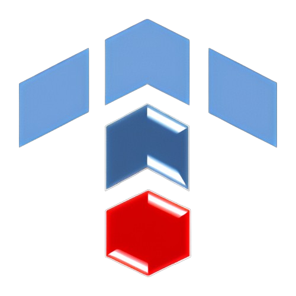

17 лет
на рынке научно-технических разработок25 крупных
исследований и проектовЗаказчики -
крупные отечественные и зарубежные транспортные и промышленные компанииперспективных
научно-методологических разработок в транспортном сектореКонцепция организации грузоперевозок на сети железных дорог АО «НК «Қазақстан темір жолы»
Целевая модель организации грузоперевозок на сети железных дорог АО «НК «Қазақстан темір жолы»
Новая Система эксплуатационных показателей и тарифо-образования на сети железных дорог
Исследование пропускной способности железных дорог Азербайджана и Грузии по направлению морских портов
Заказчик
ТОО «Истком Транс»
Программа развития железнодорожного комплекса промышленного предприятия
Заказчик
АО «Арселор МитталТемиртау»
Предпроектное исследование строительства Сухого порта на международном стыке
Заказчик
ТОО «РТС»
Предпроектное исследование по развитию транспортно-логистического комплекса в зоне притяжения порта Курык
Заказчик
ТОО «А+А Казахстан»
Методы повышения пропускной и провозной способности транзитных коридоров и железнодорожных линий АО «НК «КТЖ» в новых условиях организации движения поездов
Заказчик
ТОО «КТЖ-ГП»
Строительство контейнерного терминала в морском порту Ляньюньган (КНР)
Заказчик
АО «НК «КТЖ»
Строительство международной транспортно-логистической зоны стран Шанхайской организации содружества (ШОС) в морском порту Ляньюньган (КНР)
Заказчик
ГК «Порт Ляньюньган»
Оценка строителей Транскаспийского моста смешанного типа (железнодорожный-автотранспортный)
Заказчики
АО «НК «КТЖ», ГК «Порт Ляньюньган»
Единые нормы допускаемых скоростей движения подвижного состава по железнодорожным путям колеи 1520 (1524) мм
Заказчик
ОСЖД
Повышение квалификации инженерно-технического персонала по проектированию магистральных электровозов
Заказчик
Компания Alstom
Оптимизация поставок серной кислоты на рудодобывающие предприятия
Заказчик
НАК «КазАтомПром»
Организация и оптимизация перевозок зерновых грузов на экспорт
Заказчик
ТОО «Kazmeal»
Оптимизация транспортных процессов горно-добывающих предприятий
Заказчик
АО «ССГПО»
Оптимизация транспортно-логистических процессов предприятий строительных материалов
Заказчик
АО «Экотон+»
Оптимизация маневрового обслуживания подъездных путей крупных предприятий промышленной зоны
Заказчик
ТОО «Тобол Транс»
Разработка и внедрение Центра управления перевозок (ЦУП) поставок грузов на рудодобывающие предприятия
Заказчик
НАК «КазАтомПром»
Разработка Программных приложений для АСУ оперативного регулирования схем пассажирских поездов
Заказчик
АО «Пассажирские перевозки»
Автоматизация процессов замедления движения и закрепления вагонов на железнодорожных путях
Заказчик
АО «ТНК «Казхром»
Альтернативные виды топлива будущего и перспективы их использования в тяге поездов и маневровой работе на сети железных дорог АО «НК «КТЖ»
Заказчики
МСЖД - UIC, АУЭС
Оценка перевода магистрального тепловоза ТЭ33А на газомоторное топливо (дизельное топливо + СПГ)
Заказчик
GE Transportation
Оценка эксплуатации тепловоза ТЭ33А на газомоторном топливе на полигоне железной дороги АО «НК «КТЖ»
Заказчик
Wabtec Corporation
Перспективы развития парка магистральных грузовых электровозов на сети железных дорог АО «НК «КТЖ»
Заказчик
Компания Alstom
Перспективы развития парка магистральных грузовых тепловозов на сети железных дорог АО «НК «КТЖ»
Заказчик
Wabtec Corporation
Оценка перспективы развития парка маневровых (станционных) локомотивов на сети железных дорог АО «НК «КТЖ»
Заказчик
ТОО «Kaz Rail Services»
Разработка автоматизированной системы мониторинга расхода топлива (АСМТ) на магистральных локомотивах
Заказчик
АО «ЮНИКОМПЕКС»